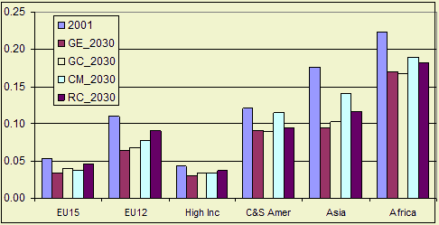

Highlights
Share of agri-food complex in economy keeps on falling in all scenarios
for 2030 compared to 2000. The higher the welfare level in a country the more
important industry and services become and the lower the share of the agri-food
complex. For most developing countries outside the Continental market, the A2
scenario implies the highest share of agriculture in 2030. Economic development
is slow in developing countries as the are left outside the Transatlantic market.

Figure 1 - GDP per capita, in 1000 USD
Future developments
The historic trend continues in the sense that the shares of agri-food complex
in economy keeps on falling. On the one hand people spend relatively less money
on food as their income gets higher (low income income elasticity of demand)
,on the other productivity growth is higher than in other sectors such as services.
The latter effect causes that agricultural prices decline relatively to the
general price index. People do not buy much more food if it gets cheaper (a
low price elasticity of demand). All in all the value share of agriculture will
decline.
Faster economic growth leads to a lower share of the agri-food complex. For
the EU15 and the US this implies that the share is lowest in the Global Economy and Continental Markets scenarios
where growth is highest. For most developing countries outside the Continental
market, the A2 scenario implies the highest share of agriculture in 2030. Economic
development is slow in developing countries.